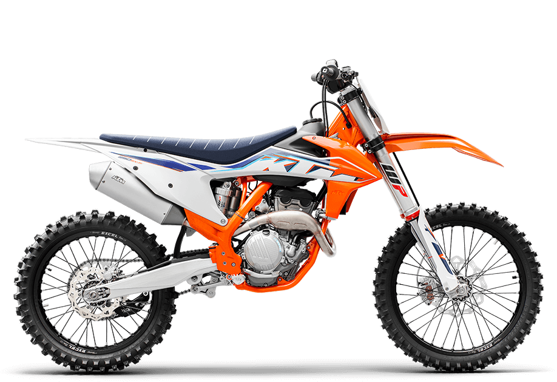

Well-known as the strongest engine in 250 4-stroke competition, the 2022 version maintains its dominance with its tried and test compact construction, excellent mass centralization, and ultra-low weight of only 25.9 kilograms. All in all, this makes the KTM 250 SX-F a real force to be reckoned with, yet still easy to ride for both amateur and professional riders.
